Pares antes|depois a 390 e 1440 px, nos dois temas, com os dados fictícios dos testes. Antes = fim da 1ª passada (3185d5b); depois = ramo lapidacao-visual-2. Detalhes em docs/ui-progresso.md.
Início com o coração 3D · computador, escuro
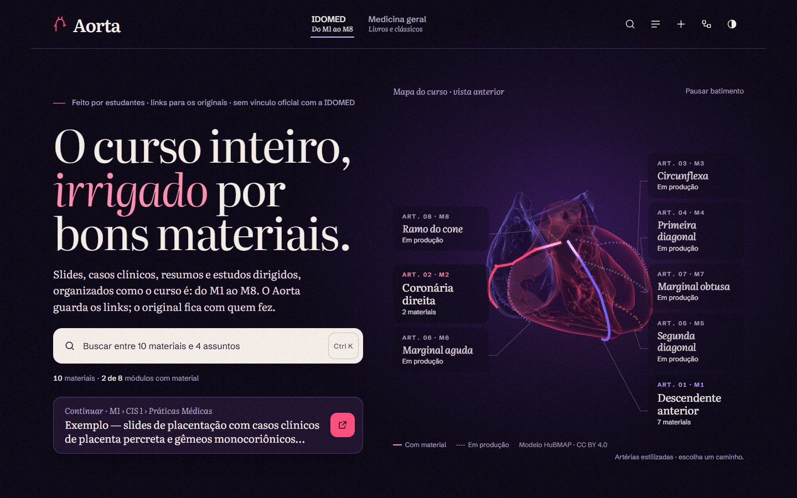
Antes · visual-v2-antes/inicio-3d@1440-dark.pngDepois · visual-v2-depois/inicio-3d@1440-dark.png
Início com o coração 3D · computador, claro
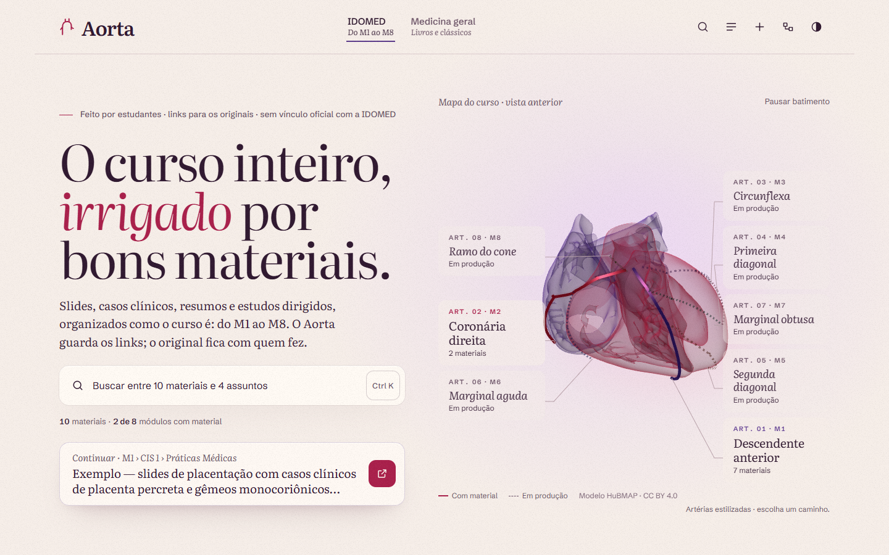
Antes · visual-v2-antes/inicio-3d@1440-light.png
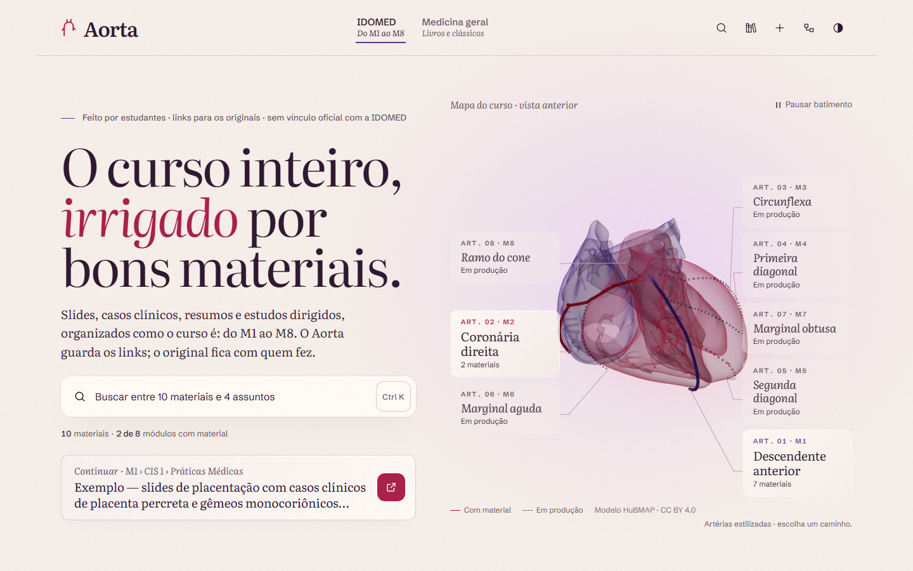
Depois · visual-v2-depois/inicio-3d@1440-light.png
Início com o coração 3D · celular, escuro
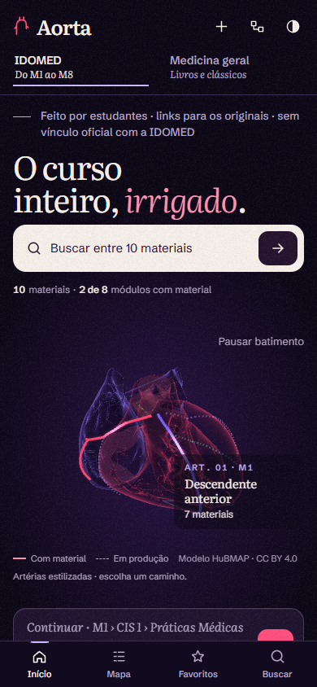
Antes · visual-v2-antes/inicio-3d@390-dark.png
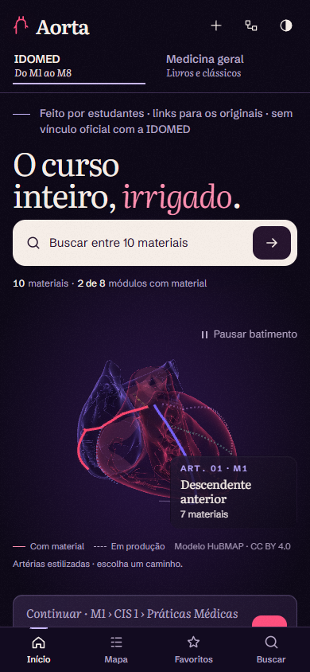
Depois · visual-v2-depois/inicio-3d@390-dark.png
Módulo M1 (página de rosto) · computador, escuro
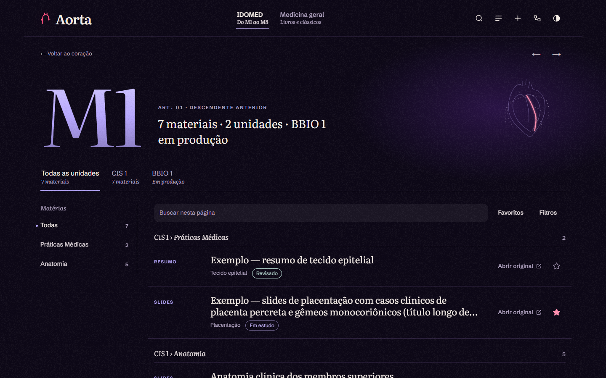
Antes · visual-v2-antes/modulo@1440-dark.pngDepois · visual-v2-depois/modulo@1440-dark.png
Matéria (Anatomia) · computador, escuro
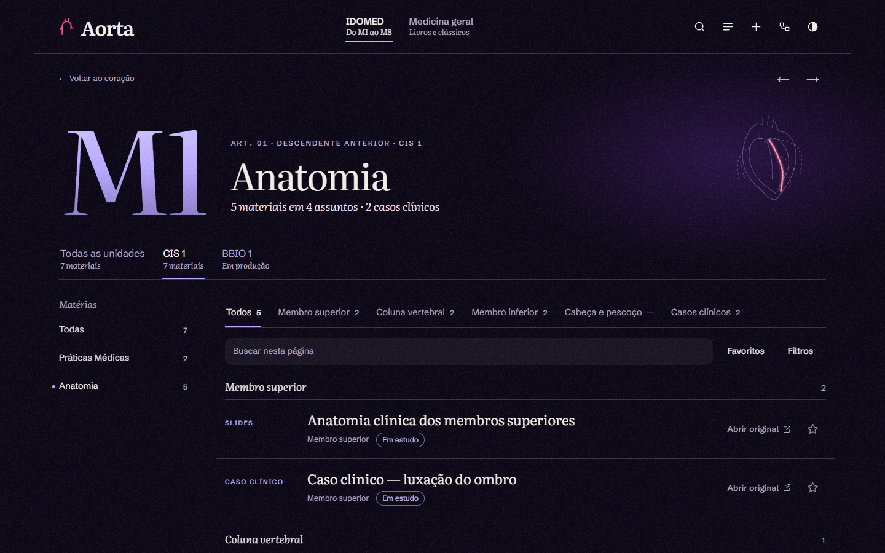
Antes · visual-v2-antes/materia@1440-dark.png
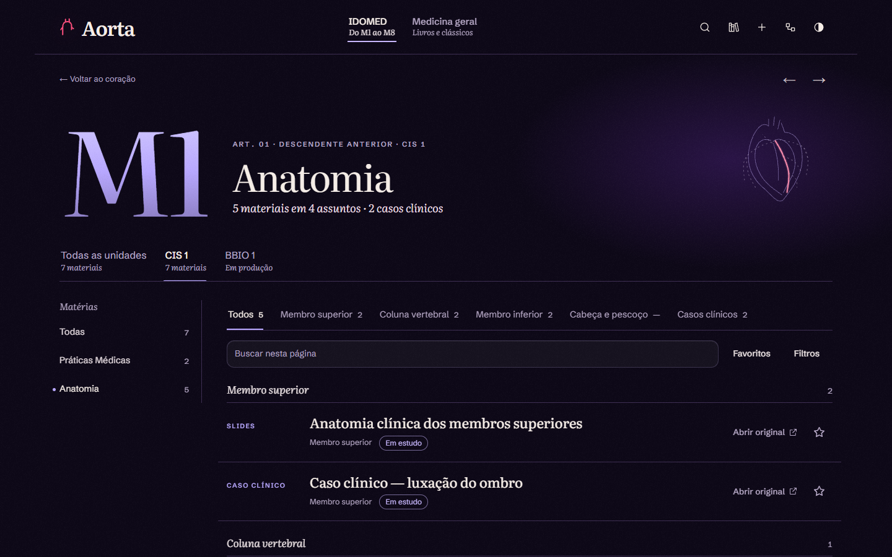
Depois · visual-v2-depois/materia@1440-dark.png
Matéria (Anatomia) · celular, escuro
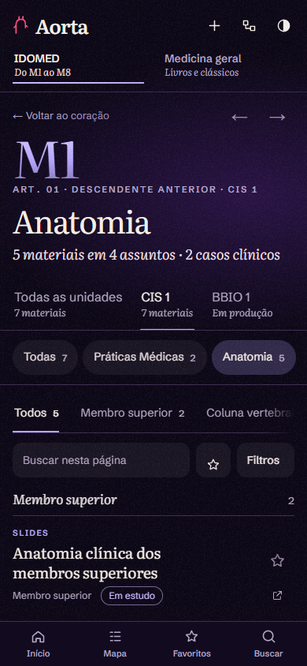
Antes · visual-v2-antes/materia@390-dark.png
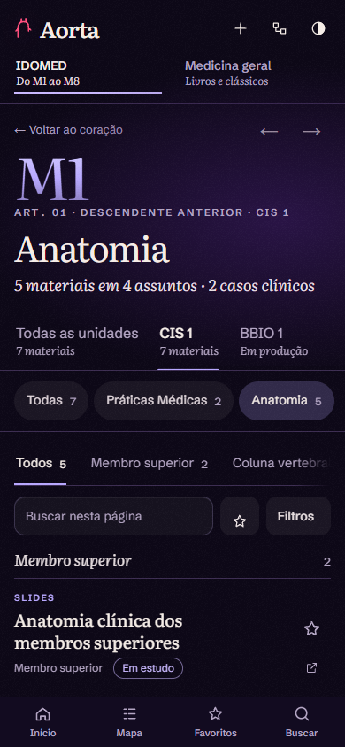
Depois · visual-v2-depois/materia@390-dark.png
Ficha (prancha) · computador, escuro
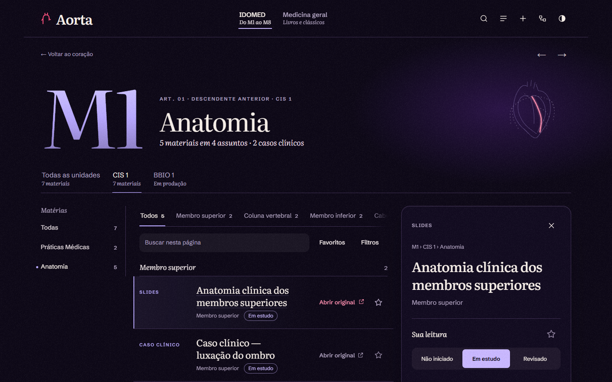
Antes · visual-v2-antes/ficha@1440-dark.png
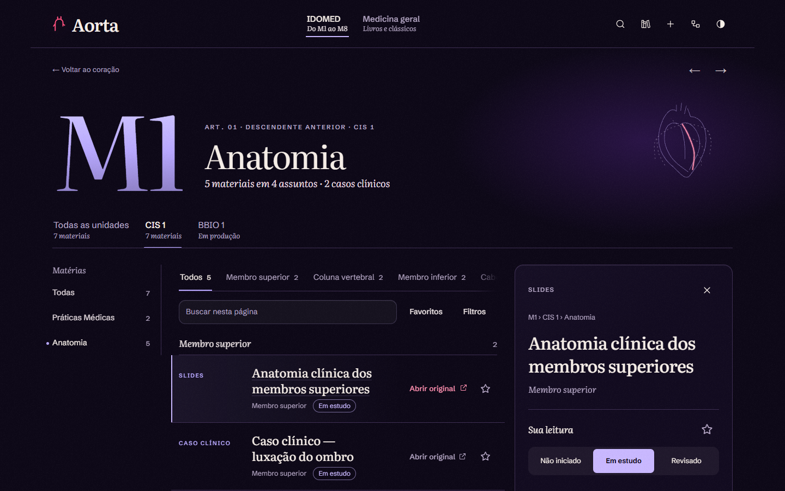
Depois · visual-v2-depois/ficha@1440-dark.png
Ficha · celular, claro
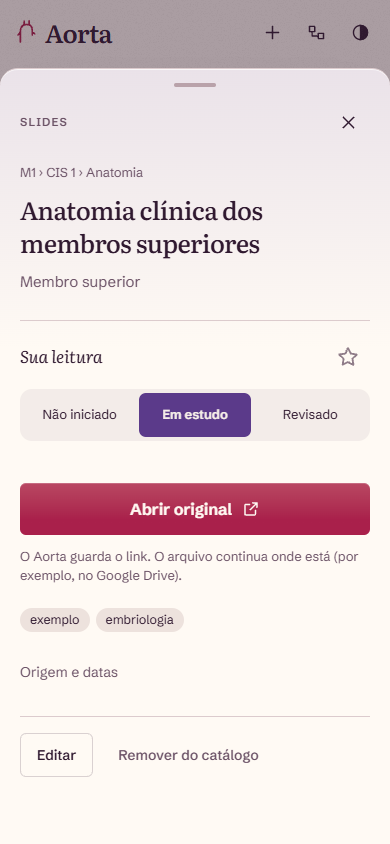
Antes · visual-v2-antes/ficha@390-light.png
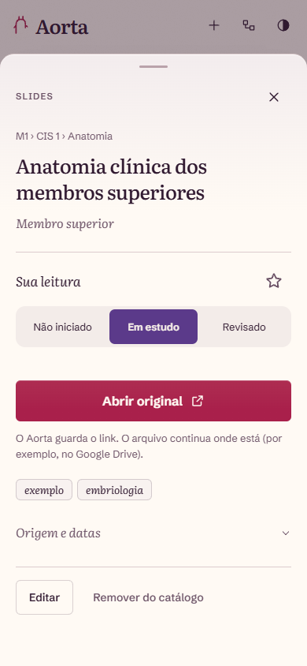
Depois · visual-v2-depois/ficha@390-light.png
Busca · computador, claro
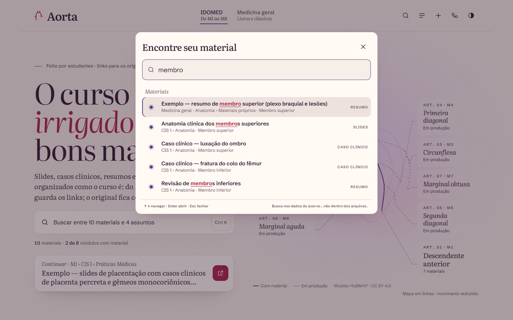
Antes · visual-v2-antes/busca@1440-light.png
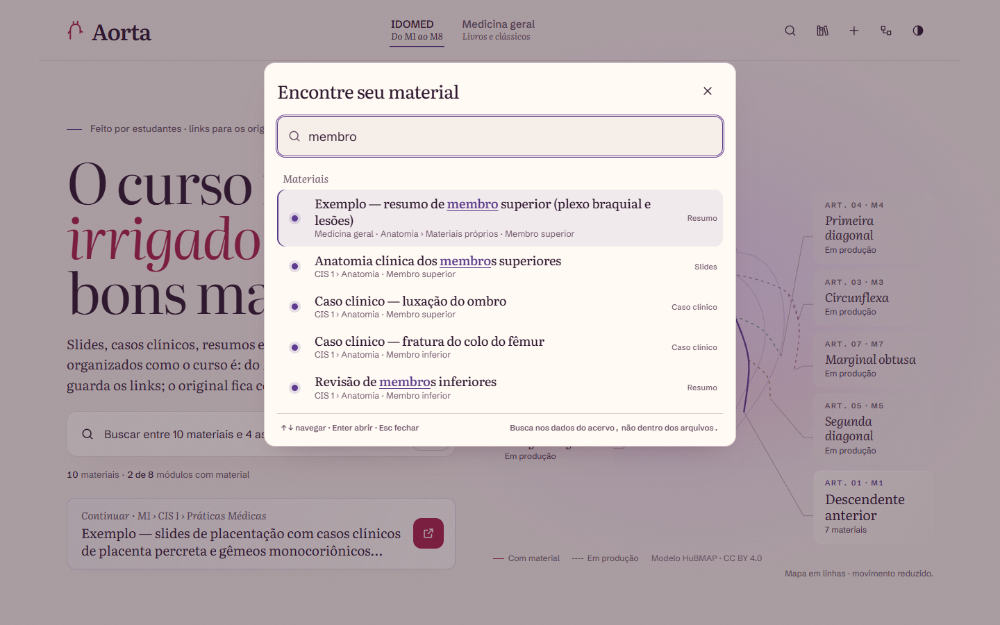
Depois · visual-v2-depois/busca@1440-light.png
Rodapé como colofão · computador, escuro
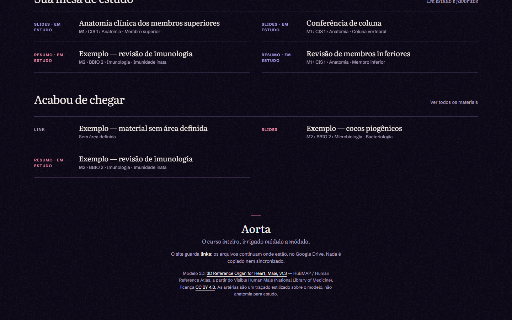
Antes · visual-v2-antes/rodape@1440-dark.pngDepois · visual-v2-depois/rodape@1440-dark.png